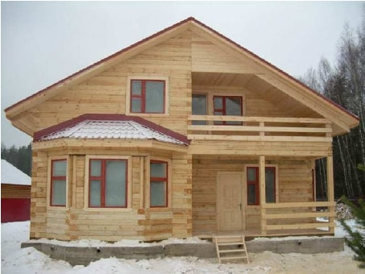
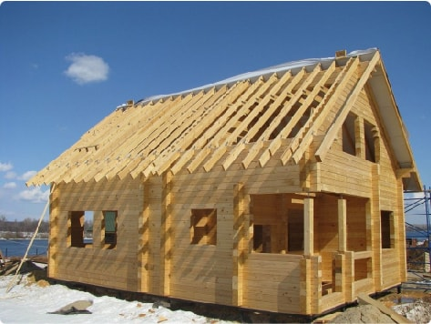
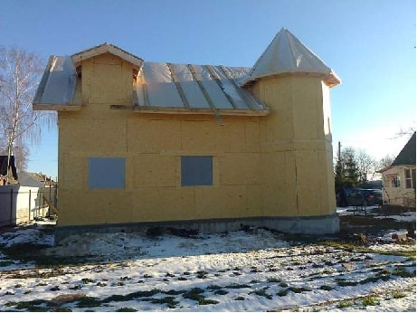
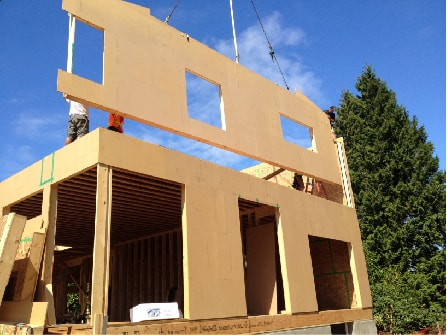
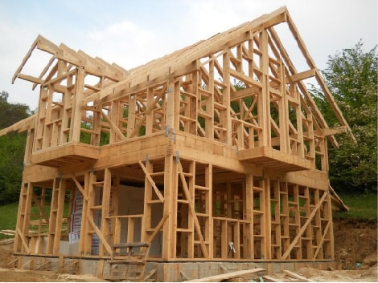
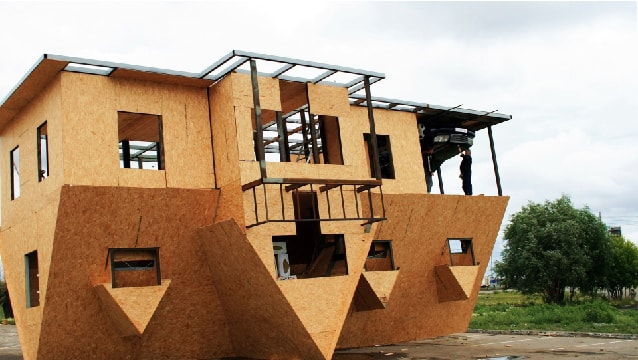
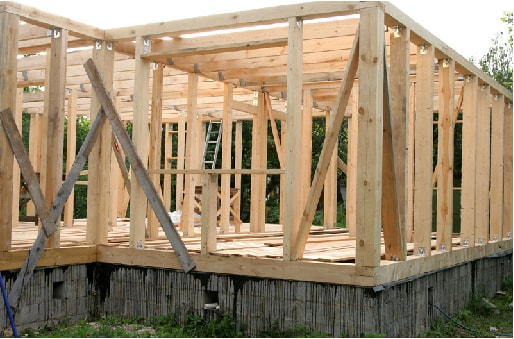
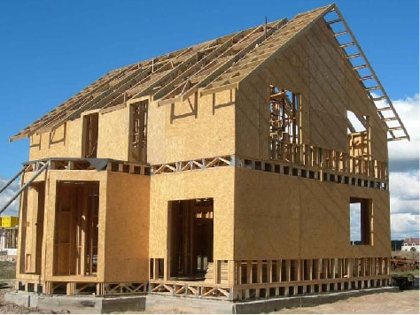
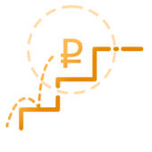

Строительство каркасных домов
Мы профессионально занимаемся строительством каркасных домов по России. На сегодняшний день
каркасные дома –
это самые доступные, тёплые, долговечные и быстровозводимые дома. Мы производим строительство каркасных
домов с контролем качества СНиП и ГОСТ. Строительство дома занимает от 1 до 3
месяцев. Строительство дома –
это процесс, который состоит из множества шагов. Если вы знаете, что делать дальше, после окончания
очередного этапа работа идет гораздо быстрей.
Дома, которые мы уже построили








Строительство каркасных домов
Мы профессионально занимаемся строительством каркасных домов по России. На сегодняшний день
каркасные дома –
это самые доступные, тёплые, долговечные и быстровозводимые дома. Мы производим строительство каркасных
домов с контролем качества СНиП и ГОСТ. Строительство дома занимает от 1 до 3
месяцев. Строительство дома –
это процесс, который состоит из множества шагов. Если вы знаете, что делать дальше, после окончания
очередного этапа работа идет гораздо быстрей.
Дома, которые мы уже построили
Преимущества каркасного дома с завода
с 5 до 20 градусов
Дом прогреваеться за 1 час
одним обогревателем
на 50% дешевле
Обходится отопление по сравнению
с кирпичным или каменным домом
до 7 дней
Сроки возведения
Больше 50 лет
Простоит ваш дом до первого
капитального ремонта
на 50% дешевле
Обходится отопление по сравнению
с кирпичным или каменным домом

до 7 дней
Сроки возведения
Система отопления современного загородного дома — важнейшая из инженерных систем. Простая «дачная»
система отопления — печь или камин при поддержке электрических конвекторов — пригодна лишь для
относительно небольших деревянных домов с отделкой вагонкой, обшивочной доской, фанерой. Система
водоснабжения загородного дома может быть автономной, питающейся от колодца или скважины, или
централизованной, подключенной к общественному водопроводу. Система электроснабжения в загородном
доме намного сложнее, чем в городской квартире.
В частном владении, по сравнению с квартирой, гораздо больше потребителей электроэнергии, которые
отличаются своими характеристиками, потребляемой мощностью и расположением, и схема электроснабжения
обладает сложной, разветвленной структурой.
Мы выполняеем все виды работ в процессе строительства загородного дома под ключ, включая
проектирование и выполнение инженерных работ по монтажу систем отопления, водоснабжения и
канализации загородного дома.
Виды фундаментов, которые мы устанавливаем:
Фундамент состоит из винтовых свай диаметром до 108 мм с лопастью специальной формы,
обработанной антикорозийным составом.
Преимущества:
- Низкая стоимость;
- Быстрота возведения;
- Возможность монтажа на болотистых и торфяных грунтах;
- Полное отсутствие землянных работ;
- Монтаж в любую погоду и время года;
- Монтаж без использования тяжелой техники;
- Устойчивость к пучению грунта.
Системы вентиляции загородного дома служат для того, чтобы в доме был всегда свежий воздух, своевременно
удалялись посторонние запахи и вредные выделения различных отделочных материалов. Летом, в жару, воздух,
находящийся в помещениях и поступающий с улицы, необходимо охлаждать, – этой цели служат системы
кондиционирования.